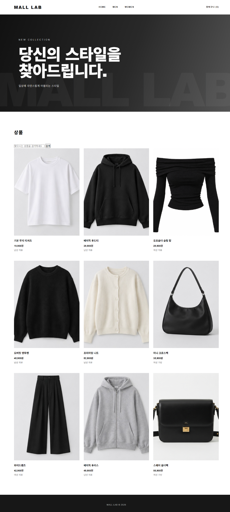
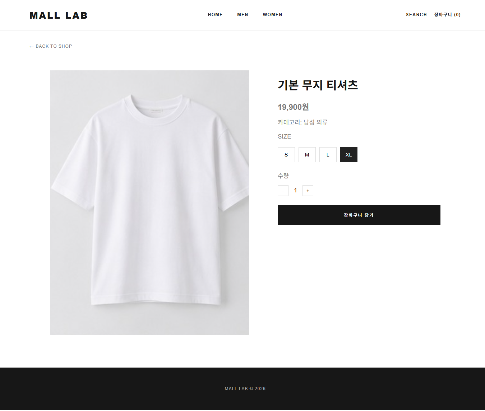
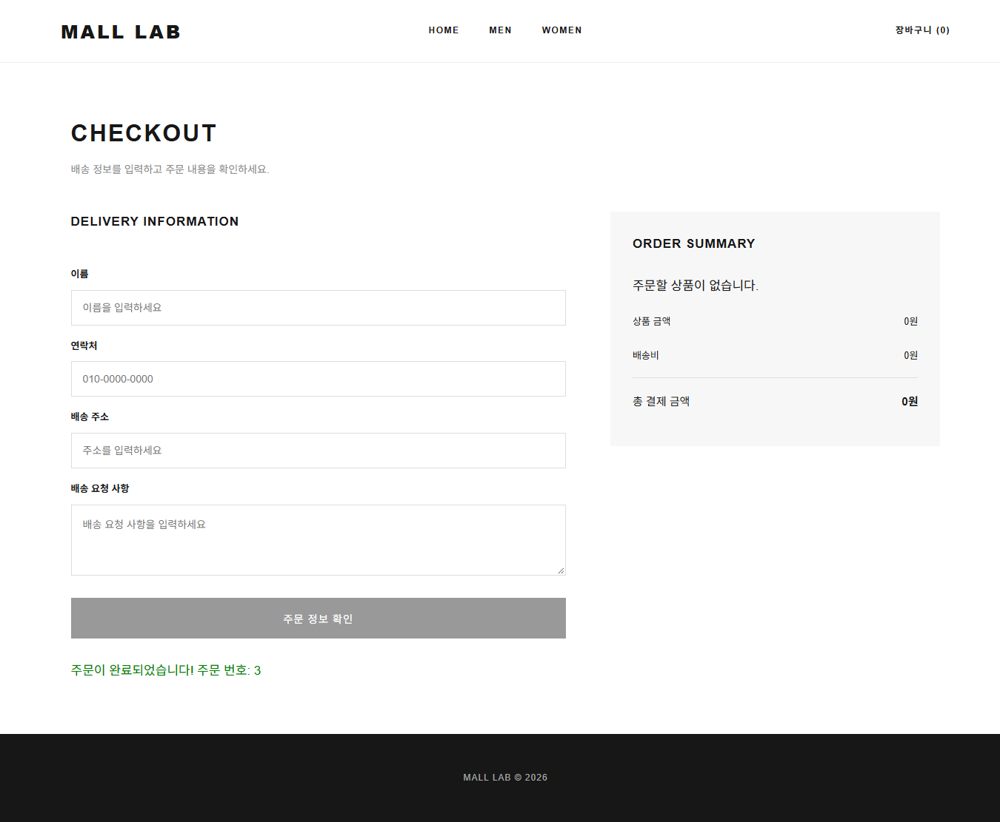

01
상품 목록과 카테고리
메인 화면에서 상품 이미지와 가격, 카테고리를 확인할 수 있습니다. 남성·여성 카테고리로 상품을 구분하고 검색 기능을 통해 원하는 상품을 찾도록 구성했습니다.
PERSONAL PROJECT · 2026
기획부터 화면 구현, 서버 기능까지 직접 만들어 본
Java 기반 온라인 쇼핑몰 프로젝트입니다.
MALL LAB은 상품을 둘러보고, 원하는 옵션을 선택해 장바구니에 담은 뒤 주문까지 진행할 수 있도록 구성한 개인 프로젝트입니다. 화면 구현뿐 아니라 상품 데이터와 서버 기능이 어떻게 연결되는지 이해하는 데 중점을 두었습니다.
프로젝트를 실행해 확인한 화면입니다.

메인 화면에서 상품 이미지와 가격, 카테고리를 확인할 수 있습니다. 남성·여성 카테고리로 상품을 구분하고 검색 기능을 통해 원하는 상품을 찾도록 구성했습니다.

상품 상세 정보와 가격을 보여주고, 사이즈 선택 및 수량 조절 후 장바구니에 담을 수 있도록 구현했습니다.

이름, 연락처, 배송 주소와 요청 사항을 입력하고 주문 요약을 확인하는 화면입니다. 주문 완료 메시지도 표시됩니다.
상품 목록을 불러오고 남성·여성 등 카테고리 기준으로 상품을 분류합니다. 상품 검색과 개별 상품 조회 기능도 구성했습니다.
상품별 이미지, 이름, 가격, 카테고리를 표시하고 사이즈와 구매 수량을 선택할 수 있도록 구현했습니다.
선택한 상품을 장바구니에 담고, 주문 화면에서 배송 정보를 입력한 뒤 주문을 진행하는 흐름을 만들었습니다.
Spring Boot 컨트롤러와 Repository를 연결해 상품 목록·상세 조회 API를 구성했습니다. 상품 이미지 업로드 요청을 처리하고 상품 데이터에 이미지 경로를 저장하는 기능도 구현했습니다.
Java 21
Spring Boot
Spring Data JPA
MySQL
MySQL Workbench
HTML
CSS
JavaScript
IntelliJ IDEA
Maven
Git / GitHub
이번 프로젝트를 통해 프론트엔드 화면에서 발생한 요청이 Spring Boot 컨트롤러로 전달되고, Repository를 통해 데이터에 접근하는 기본 구조를 익혔습니다. 기능을 하나씩 추가하고 오류를 해결하면서 웹 애플리케이션의 전체 흐름을 경험했습니다.